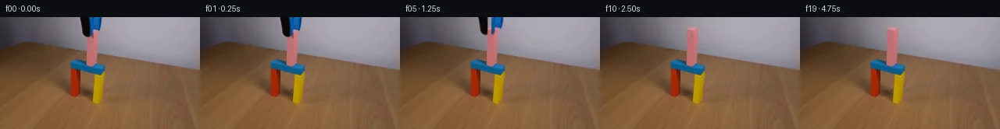

![首帧]()

Round 00
2026-11-05T18:33:29.717113+00:00像素候选变化代码 +141/−0inspection 更新
pixels 5ff25d8a2730f6d9 · code e51f0bf9eba9d159
查看本轮 generate.py 真实 diff
--- previous/generate.py
+++ current/generate.py
@@ -0,0 +1,141 @@
+"""Local pixel continuation of a held block being released.
+Uses only the supplied RGB image, numpy, scipy, OpenCV and Pillow.
+"""
+from pathlib import Path
+import numpy as np
+from PIL import Image, ImageDraw, ImageFilter
+from scipy.ndimage import gaussian_filter
+import cv2
+from artifact_io import save
+
+ROOT = Path(__file__).resolve().parent
+W,H = 256,144
+S=8
+source=np.asarray(Image.open(ROOT/'first_frame.png').convert('RGB'),dtype=np.float32)
+
+def polygon(points):
+ im=Image.new('L',(W*S,H*S),0)
+ ImageDraw.Draw(im).polygon([(round(x*S),round(y*S)) for x,y in points],fill=255)
+ return np.asarray(im.resize((W,H),Image.Resampling.LANCZOS),dtype=np.float32)/255
+
+# The exact photographed silhouette, including its rounded lower jaw.
+outline=[(102.55,-2),(130.6,-2),(129.35,6.6),(128.4,11.8),
+ (127.5,15.0),(126.2,17.6),(123.9,17.0),(119.6,16.35),
+ (119.0,19.0),(118.0,21.6),(116.7,24.0),(114.6,25.1),
+ (111.4,25.45),(108.8,24.2),(107.2,22.5),(106.1,19.3),
+ (105.5,15.0),(104.75,9.0),(103.65,3.6)]
+core=polygon(outline)
+# A soft outer matte retains the supplied antialiasing and photographic texture.
+mattes=cv2.dilate(core,np.ones((3,3),np.uint8))
+mattes=gaussian_filter(mattes,0.34)
+mattes[mattes<0.006]=0
+Y,X=np.mgrid[:H,:W]
+
+# Fit a smooth wall surface from nearby wall pixels only. The fit is local,
+# excluding both the photographed tool and the standing pink post.
+xx=(X-116)/28.; yy=Y/35.
+terms=np.stack([np.ones_like(xx),xx,yy,xx*xx,xx*yy,yy*yy,
+ xx**3,xx*xx*yy,xx*yy*yy,yy**3],axis=-1)
+samples=(X>=91)&(X<=146)&(Y<=36)&(mattes<0.01)
+samples &= ~((X>=110)&(X<=127)&(Y>=11))
+coef=np.linalg.lstsq(terms[samples],source[samples],rcond=None)[0]
+wall=np.clip(terms@coef,0,255)
+
+# Extend the actual post's front and side colours under the former tool.
+# The reconstructed top is a small planar cuboid cap, foreshortened like the
+# photographed blue crossbar. Its exposed side continues the source texture.
+post=wall.copy()
+front=polygon([(111.45,15.4),(119.8,17.0),(119.5,29.5),(111.15,29.5)])
+side=polygon([(119.8,17.0),(125.55,14.0),(124.9,29.5),(119.5,29.5)])
+cap=polygon([(111.45,15.4),(117.2,12.45),(125.55,14.0),(119.8,17.0)])
+rng=np.random.default_rng(174)
+noise=gaussian_filter(rng.normal(0,1,(H,W)),0.4)
+front_rgb=np.stack([191.5+0.11*(Y-25),111.8+0.04*(Y-25),115.8-0.04*(Y-25)],axis=-1)
+front_rgb+=noise[:,:,None]*0.65
+side_rgb=np.stack([204.-0.18*(Y-20),124.-0.1*(Y-20),130.-0.13*(Y-20)],axis=-1)
+side_rgb+=noise[:,:,None]*0.65
+cap_rgb=np.zeros_like(source)+np.array([216,145,148])
+cap_rgb+=noise[:,:,None]*0.4
+for mask,col in [(front,front_rgb),(side,side_rgb),(cap,cap_rgb)]:
+ post=post*(1-mask[:,:,None])+col*mask[:,:,None]
+
+# Repaint only the small area formerly concealed by the tool. Elsewhere the
+# original photographed scene remains byte-for-byte unchanged.
+clean=source.copy()
+reveal=cv2.dilate(core,np.ones((3,3),np.uint8))
+reveal=gaussian_filter(reveal,0.42)
+reveal[reveal<0.006]=0
+clean=clean*(1-reveal[:,:,None])+post*reveal[:,:,None]
+# A contact shadow on the post disappears smoothly as the jaws separate.
+shadow_mask=polygon([(111.1,22.5),(120.1,17.1),(120.4,26.4),
+ (118.8,28.0),(112.0,27.2)])
+shadow_mask=gaussian_filter(shadow_mask,0.5)
+shadow_mask*=1-reveal
+clean=clean*(1-shadow_mask[:,:,None])+post*shadow_mask[:,:,None]
+# The two photographed jaws are split at their original black/blue seam.
+seam=114.75-0.018*Y
+left_weight=np.clip((seam-X)+0.5,0,1)
+black_alpha=mattes*left_weight
+blue_alpha=mattes*(1-left_weight)
+# Premultiplied layers allow subpixel interpolation without sharp cutout edges.
+black_rgb=source*black_alpha[:,:,None]
+blue_rgb=source*blue_alpha[:,:,None]
+
+def translate(a,dx,dy):
+ return cv2.warpAffine(a,np.array([[1.,0.,dx],[0.,1.,dy]],np.float32),
+ (W,H),flags=cv2.INTER_LINEAR,
+ borderMode=cv2.BORDER_CONSTANT,borderValue=0)
… diff truncated; 54 more lines …